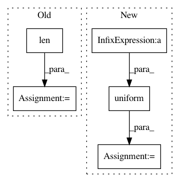

d14ad44d0f425c04be5a6cdca13fc513fba53843,test_models_train.py,,,#,11
Before Change
if __name__ == "__main__":
network_inputs = np.random.uniform(size=(3, 16, 16, 1))
model = convolutional_model(input_shapes=list(network_inputs[0].shape),
num_frames=len(network_inputs))
model.compile(optimizer="adam",
loss=deep_speaker_loss,
metrics=["accuracy"])
After Change
output = model.predict(network_inputs)
// stub_targets = np.expand_dims([0] * BATCH_SIZE * NUM_FRAMES, axis=1)
stub_targets = np.random.uniform(size=(BATCH_SIZE * NUM_FRAMES, 512))
print(model.train_on_batch(network_inputs, stub_targets))
// from triplet_loss import deep_speaker_loss
In pattern: SUPERPATTERN
Frequency: 3
Non-data size: 5
Instances
Project Name: philipperemy/deep-speaker
Commit Name: d14ad44d0f425c04be5a6cdca13fc513fba53843
Time: 2017-06-12
Author: premy@reactive.co.jp
File Name: test_models_train.py
Class Name:
Method Name:
Project Name: philipperemy/deep-speaker
Commit Name: 4d3023ed5db726f6d4bab30e2ff0620472c37966
Time: 2017-06-12
Author: premy@reactive.co.jp
File Name: models_train.py
Class Name:
Method Name:
Project Name: probcomp/bayeslite
Commit Name: 68a7d5553fa4cef09e0159ac5e100a6424172386
Time: 2015-09-24
Author: gremio@acm.org
File Name: src/metamodels/crosscat.py
Class Name: CrosscatMetamodel
Method Name: create_generator